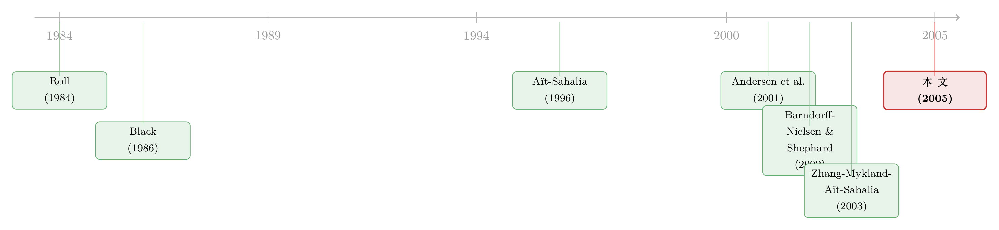

一秒一笔的数据，为什么只敢拿 5 分钟用一次？
本文读的是 Aït-Sahalia, Mykland & Zhang (2005, Review of Financial Studies)：当我们用高频数据估波动率时，如果对市场微观结构噪声视而不见，最优采样频率竟然是有限的——这与「数据越多越好」的统计直觉相悖；但只要把噪声写进似然函数、把所有数据都用上，「采样越密越好」又会被重新找回来，而且即便你把噪声分布设错了也无妨。一句话的答案是：能采多密，就采多密。
1 一个让人不安的常识
先说一个统计学里几乎不容置疑的信条：在其他条件相同的情况下，数据越多越好。
把这个信条搬到波动率估计上，故事似乎顺理成章。我们想估的是一只证券对数价格的扩散系数 \(\sigma^2\)。经典做法是把一天切成很多小段，算出每一段的对数收益 \(Y_i\)，再把它们的平方加起来——这就是所谓的已实现波动率 (realized volatility)，本质上是过程的二次变差 (quadratic variation) 的离散近似：
$$\hat\sigma^2 = \frac{1}{T}\sum_{i=1}^{N} Y_i^2$$
理论上，只要采样间隔 \(\Delta\) 趋于零、把数据切得越来越细，这个估计量就会在极限里收敛到真实方差——一个完美的估计。换句话说，按这套逻辑，面对一只每秒成交一笔的活跃股票，我们应该把每一秒都用上才对。
可现实里没人这么干。
A typical 6.5 小时的交易日，每秒一笔，就是 23,400 个观测。但你翻开高频实证文献，会发现大家用的采样间隔从 5 分钟 [Andersen et al. (2001)、Barndorff-Nielsen and Shephard (2002)] 一路拉到 30 分钟 [Andersen et al. (2003)]。用 5 分钟一次，意味着一天只留下 78 个观测——每 300 笔交易里，扔掉了 299 笔。 这跟「数据越多越好」简直背道而驰。
于是一个自然的问题浮出来：这到底是从业者偷懒拍脑袋，还是背后藏着一条我们没算清的账？ 本文的第一个贡献，就是把这条账算到了闭式解。
2 没有噪声的世界：越密越好
先把基准情形讲干净。本文的设定极简：对数价格是一个时齐扩散，
$$dX_t = m(X_t,\theta)\,dt + \sigma\,dW_t$$
作者论证，在高频语境下，扩散项是 \((dt)^{1/2}\) 阶、漂移项只有 \(dt\) 阶，漂移在高频下数学上可以忽略；而且加进漂移反而会因为它本身估不准而拖累方差估计 [这一点早在 Merton (1980) 就指出过：估方差时不要把收益去中心化]。于是直接令 \(m=0\)，
$$X_t = \sigma W_t$$
此时对数收益 \(Y_i = X_{t_i}-X_{t_{i-1}}\) 是独立同分布的 \(\mathcal{N}(0,\sigma^2\Delta)\)，对数似然函数是
$$l(\sigma^2) = -\frac{N}{2}\ln(2\pi\sigma^2\Delta) - \frac{1}{2\sigma^2\Delta}\,Y'Y$$
极大似然估计恰好就是上面那个二次变差近似 \(\hat\sigma^2\)。它无偏，而且方差是
$$\mathrm{var}(\hat\sigma^2) = \frac{N\cdot 2\sigma^4\Delta^2}{T^2} = 2\sigma^4\Delta$$
结论一目了然：\(\Delta\) 越小，方差越小。在这个干净的世界里，常识成立——能采多密就采多密。
但真实的成交价不是 \(X\)。
3 把噪声请进来：收益变成了 MA(1)
市场微观结构文献早就告诉我们，观测到的成交价是「有效价格」加上一层噪声——这是 Black (1986) 以降的共识。本文采用了最简的约化形式：我们观测不到 \(X\)，只能观测到带误差的 \(\tilde X\)，
$$\tilde X_{t_i} = X_{t_i} + U_{t_i}$$
其中 \(U_{t_i}\) 是独立同分布、均值零、方差 \(a^2\) 的噪声，且独立于 \(W\)。这个 \(U\) 是一个「大杂烩」：买卖价差及其反弹、交易规模差异、知情交易者带来的信息不对称、价格离散化（tick）……全被塞进了一个项。作者特意指出，这个约化形式正是 Roll (1984)（\(U\) 全来自买卖价差）、Glosten and Harris (1988)（含逆向选择成分）、Hasbrouck (1993)（把 \(a\) 当作市场质量的概括性度量）、Madhavan, Richardson, and Roomans (1997) 等一系列结构模型的共同「出口」。
Roll (1984) 模型里 \(U_t = (s/2)Q_t\)，\(Q_t\) 是 \(\pm 1\) 等概率的订单流方向，于是 \(\mathrm{var}[U]=a^2=s^2/4\)，买卖价差可以从收益的一阶自协方差里反解出来。关于「如何在价格离散、一天只成交几笔时仍把价差量准」，可参见《一天只成交几笔，价差还能量准吗？》。
噪声一进来，对数收益的结构就变了。因为
$$Y_i = \sigma(W_{t_i}-W_{t_{i-1}}) + U_{t_i} - U_{t_{i-1}} \equiv \varepsilon_i + \eta\,\varepsilon_{i-1}$$
——它从独立同分布变成了一个 MA(1) 过程。相邻两期共享了同一个 \(U_{t_{i-1}}\)，于是收益被人为地引入了（负的）一阶自相关。把它换算回原参数，两条关系道破了天机：
$$\mathrm{var}[Y_i] = \sigma^2\Delta + 2a^2, \qquad \mathrm{cov}(Y_i,Y_{i-1}) = -a^2$$
第一条最关键。我们把它单独拎出来做一次解剖：
看清楚这个分解，整篇论文的直觉就到手了。信号 \(\sigma^2\Delta\) 会随着你切得越细而消失，噪声 \(2a^2\) 却纹丝不动。 用信噪比的语言说：在极短的时间间隔上，一笔对数收益里几乎全是微观结构噪声，关于波动率的信息少得可怜；只有把间隔拉长，波动率的「信号」才慢慢盖过噪声。噪声引起的那部分占比是
$$\pi = \frac{2a^2}{\sigma^2\Delta + 2a^2}$$
当 \(\Delta\to 0\)，\(\pi\to 1\)——你以为在测波动，其实在测噪声。一阶自相关恰好是 \(-\pi/2\)。
4 反常识的结论：最优采样频率是有限的
现在把噪声忽略、仍然套用第 2 节那个「无噪声」的似然去估 \(\sigma^2\)，会发生什么？本文的 Theorem 1 给出了小样本（任意有限 \(T\)）下的精确偏差与方差。偏差是：
$$E[\hat\sigma^2] - \sigma^2 = \frac{2a^2}{\Delta}$$
这一行就足以推翻常识。\(\Delta\to 0\) 时偏差不是消失，而是爆炸到无穷。 直觉正是上一节那个 \(2a^2\)：你采得越密，累加进来的噪声越多。用 \(n=T/\Delta\) 表示样本量，可以写成 \(E[\hat\sigma^2]\approx 2na^2/T\)——\(\hat\sigma^2\) 实际上在估噪声方差 \(a^2\)，跟我们关心的 \(\sigma^2\) 几乎无关。
而方差项（含噪声的四阶累积量 \(\mathrm{cum}_4[U]\)）是
$$\mathrm{var}(\hat\sigma^2) = \frac{2\left(\sigma^4\Delta^2 + 4\sigma^2\Delta a^2 + 6a^4 + 2\,\mathrm{cum}_4[U]\right)}{T} - \frac{2\left(2a^4 + \mathrm{cum}_4[U]\right)}{T^2}$$
于是出现了一个经典的偏差—方差权衡 (bias–variance trade-off)：\(\Delta\) 越小偏差越大，\(\Delta\) 越大方差越大。这与非参数估计里带宽 \(h\) 的角色如出一辙——\(\Delta^{-1}\) 就扮演着带宽。两股力量一拉扯，均方根误差 (root mean squared error, RMSE) 存在唯一的最小值，对应一个有限的最优采样间隔 \(\Delta^*\)。它有闭式表达式；当 \(T\) 增大时，
$$\Delta^* = \frac{2^{2/3}\,a^{4/3}}{\sigma^{4/3}}\,T^{1/3} + O\!\left(\frac{1}{T^{1/3}}\right)$$
这就是给从业者的定量答案。把它对着文献里报告过的噪声水平做校准，结论很具体：在一天数据的情形下，最优采样间隔从 4 分钟到 3 小时不等，取决于噪声相对于标的收益方差的大小；若用更长时间窗，最优间隔还会显著拉长。那些「拍脑袋」选 5 分钟、30 分钟的做法，竟然落在了理论预测的合理区间里。
这里有一个微妙的转向值得记住：在无噪声世界里 RMSE 由方差主导、要选最小的 \(\Delta\)；在有噪声世界里，\(T\to\infty\) 时方差趋于零，RMSE 被那个与 \(T\) 无关的偏差 \(2a^2/\Delta\) 主导，于是反过来要选最大的 \(\Delta\)。同一个估计量，两种世界，最优方向相反。
5 真正关键的一步：把噪声写进似然
到这里，故事似乎可以收尾了：有噪声，就老老实实地用那个有限的最优频率。
但作者偏不。因为「采 5 分钟、扔掉 299/300 的数据」从统计学上讲实在太浪费——它固然好过用每秒数据去硬算（那样偏差爆炸），却绝不是手握完整高频数据集时的最优解。问题出在估计量本身，而不是数据。
那真正关键的一步是什么？把噪声显式地建模进似然函数。既然带噪声的对数收益是一个 MA(1)、其参数 \((\gamma^2,\eta)\) 与 \((\sigma^2,a^2)\) 一一对应，那我们完全可以直接对这个 MA(1) 写出似然、做极大似然估计。作者在这里需要先假设噪声的分布——他们假设 \(U\) 是高斯的。
结论是：一旦这么做，「采样越密越好」这个一阶统计效应被重新找回来了。也就是说，正确建模噪声之后，\(\Delta\to 0\) 重新变成最优。被微观结构噪声「偷走」的高频数据，又物归原主。
6 于是反转出现：设错了分布也没关系
可是，假设噪声高斯，会不会闯祸？微观结构理论那么精致，真实噪声多半不是正态的。把分布设错，会不会比不设还糟？
这是全文最漂亮的反转。作者证明：即便你把噪声分布设错了——以为是正态，其实不是——基于高斯似然的这套修正依然有效。 不仅「采样越密越好」依然成立（这与「不修正」时的有限最优频率形成鲜明对照），而且估计量的方差，与你把噪声分布设对时完全一样。
这是一个拟极大似然 (quasi-maximum likelihood) 的稳健性结果，思想可追溯到 White (1982) 关于误设模型下极大似然的经典工作。它的分量很重：它意味着，在用高频金融数据估连续时间模型时，只要把噪声的存在纳入估计量，哪怕你说不准噪声到底服从什么分布，也应该把噪声算进去。这才是作者真正想给从业者的建议。
所以回到标题的问句——多久采一次？答案是「能多密就多密」，前提是你在设计估计量时正视了噪声的存在（本文主推极大似然）。如果你执意只用平方收益之和这种朴素估计量、又不肯为噪声做任何修正，那才退而求其次，用第 4 节那个有限的最优频率。
本文是参数化框架。它的姊妹篇 Zhang, Mykland, and Aït-Sahalia (2003)（即后来著名的「两时间尺度」TSRV）处理的是非参数情形：波动率本身是随机过程、对其结构一无所知，目标变成估一段时间（比如一天）的积分波动率，靠子采样与平均的两尺度估计量来同样地「用上全部数据」。
7 文献脉络
把这条线索捋一捋，会看到两条河流的交汇。
一条是市场微观结构的河。Black (1986) 那篇《Noise》立起了「观测价 = 有效价 + 噪声」的概念；Roll (1984) 用买卖价差给了噪声第一个结构化的身躯；Glosten (1987)、Glosten and Harris (1988) 把逆向选择拆进了价差；Harris (1990a, 1990b) 补上了价差之外的噪声来源；Hasbrouck (1993) 干脆把噪声标准差 \(a\) 提升为「市场质量」的概括性度量。French and Roll (1986) 早就注意到要为这种自相关去调整方差估计。
另一条是高频计量的河。一支主张估计方法应当对高频噪声稳健、不要求 \(\Delta\to 0\) [Aït-Sahalia (1996, 2002)、Hansen and Scheinkman (1995)]；另一支则恰恰建立在 \(\Delta\to 0\) 之上，用已实现波动率去逼近二次变差 [Andersen et al. (2001, 2003)、Barndorff-Nielsen and Shephard (2002)、Bandi and Phillips (2003)]。后一支正是本文火力最集中的地方——它们用高频数据，却往往对噪声视而不见。

本文站在两条河的汇流处：它用一个最简约化形式把微观结构噪声搬进了高频计量的核心问题，既给了「忽略噪声时」的闭式最优频率，又给了「正视噪声时」的稳健极大似然方案，最后由 Zhang, Mykland, and Aït-Sahalia (2003) 把同一套思想推向非参数。
8 评论与延伸（Q&A + 研究方向）
(a) 几个可能的疑问
Q：把漂移项直接扔掉（\(m=0\)），不会丢掉信息吗？
在高频语境下不会，反而是更优的选择。扩散项是 \((dt)^{1/2}\) 阶、漂移项只有 \(dt\) 阶，后者在高频极限下数学上可忽略；而且漂移本身估不准、标准误很大，强行估它会拖累方差估计。Merton (1980) 早就指出，估方差时不要去中心化收益。作者也在第 9.1 节验证：加回漂移不改变结论。
Q：为什么噪声一进来，收益就恰好是 MA(1)，而不是更高阶？
因为噪声 \(U\) 是独立同分布、且只在相邻两期的收益里共享同一个端点 \(U_{t_{i-1}}\)。\(Y_i\) 与 \(Y_{i-1}\) 共用一个 \(U\) 项、与 \(Y_{i-2}\) 则不再有交集，所以自协方差在一阶之后就截断了——这正是 MA(1) 的定义性特征。一旦放松「噪声序列不相关」的假设（第 9.2、9.3 节），结构会复杂化，但不改变核心结论。
Q：「最优采样频率有限」是因为方差太大，还是因为偏差太大？
是两者的权衡，但主导项随 \(T\) 变化。\(T\) 固定时是经典的偏差—方差权衡；\(T\to\infty\) 时方差趋于零，RMSE 由那个不随 \(T\) 衰减的偏差 \(2a^2/\Delta\) 主导，于是要把 \(\Delta\) 调大去压偏差。这与无噪声情形（要把 \(\Delta\) 调到最小）方向相反，是全文最反直觉的地方。
Q：高斯似然的稳健性，凭什么对「设错分布」免疫？
这是拟极大似然（White 1982）的一般现象：当被估的目标参数主要由二阶矩（这里是 \(\sigma^2\)、\(a^2\)）决定时，高斯似然的得分方程在矩条件层面仍然成立，即使真实分布有非零的高阶累积量。作者进一步证明，不仅一致性保住了，连渐近方差都与分布设对时相同——这是比「设错也不偏」更强的结论。
Q：那 4 分钟到 3 小时这么宽的区间，到底说明了什么？
说明「最优频率」对噪声相对大小 \(a^2/\sigma^2\Delta\) 极其敏感，没有放之四海的「正确频率」。它给文献里那些 5 分钟、30 分钟的 ad hoc 选择提供了一个可计算的标尺，但也提醒我们：与其纠结频率，不如换一个正视噪声的估计量。
Q：这套结论能直接搬到公司债、外汇这种 OTC 市场吗？
不能照搬。本文假设等间隔采样、噪声独立同分布且独立于价格过程。OTC 市场成交稀疏、时间间隔随机（本文第 8 节才开始处理随机采样），且噪声常与订单流、库存相关。把这套框架移植到债券，需要重新建模噪声的相关结构——这恰恰是下面研究方向的切入点。
(b) 几个可能的研究问题与提案
-
公司债的「最优采样」与流动性度量。 【经济故事】公司债成交极稀疏、价格里塞满了交易商加价、库存与逆向选择，正是「微观结构噪声」最浓的市场之一。本文那个 \(\mathrm{var}[Y]=\sigma^2\Delta+2a^2\) 的分解，意味着债券收益里被噪声占据的比例 \(\pi\) 可能远高于股票，估出来的 \(a^2\) 本身就是一个流动性指标。【可行性】中。数据用 TRACE 逐笔成交即可，识别上的难点是债券成交非等间隔、且当日可能只有寥寥几笔——需要先把本文第 8 节的随机采样框架嫁接过来，doable 但需谨慎处理稀疏性。
-
把 \(a\) 当作「市场质量」的资产定价因子。 【经济故事】Hasbrouck (1993) 把 \(a\) 解读为市场质量的概括度量。若能从高频数据稳健地估出每只债券/股票的 \(a\)，它是否在横截面上被定价？即流动性差（\(a\) 大）的资产是否要求更高的预期收益？【可行性】高。\(a\) 的极大似然估计本文已给出，构造横截面组合做 Fama–MacBeth 即可，与现有流动性定价文献能直接对话。
-
外资持有人与微观结构噪声。 【经济故事】外资比例高的市场/证券，订单流的信息含量与库存压力可能不同，进而改变噪声方差 \(a^2\) 与其自相关结构。一个自然的问题是：外资进入是降低了 \(a\)（提升市场质量），还是抬高了 \(a\)（带来更多逆向选择）？【可行性】中。需要把噪声参数估计与外资持股数据（如 KOSPI、新兴市场的可投资度变量）结合，识别上可借用本文已有的可投资度自然实验思路。
-
误设稳健性在「相关噪声」下还成立吗？ 【经济故事】本文的稳健性建立在噪声独立同分布之上。但逆向选择会让 \(U\) 与 \(W\) 相关、且呈现一阶自相关（作者第 9.2、9.3 节已部分放松）。一个值得做的理论工作是：在噪声与价格相关的情形下，高斯拟似然是否仍然「设错也不偏」？【可行性】中偏低。纯理论推导，需要扩展 White (1982) 的论证到相关误差，doable 但技术门槛高。
-
频率选择对异象/风险溢价估计的传导。 【经济故事】既然采样频率直接决定了波动率估计的偏差，那么用不同频率估出的已实现方差，会不会系统性地扭曲依赖波动率的下游结论（如波动率风险溢价、beta 异象）？【可行性】高。把本文的频率—偏差公式作为「测量误差模型」嵌入下游回归，做敏感性分析即可，数据现成。
9 我的判断
这篇论文的贡献在于它的简洁与建设性：它没有去构造更复杂的微观结构结构模型，而是用一个最朴素的「有效价 + 独立同分布噪声」约化形式，把一个长期被含糊处理的实务问题（多久采一次）推到了闭式解，并且给出了一个可操作的、且对分布误设稳健的替代方案。那句「sample as often as possible, provided you account for the noise」是真正有政策含义的结论——它把争论从「选哪个频率」转移到了「选哪个估计量」，这是更高层次的进步。
要说对识别（这里其实是对设定）的担忧，核心都在那几条简化假设上：噪声独立同分布、独立于价格、等间隔采样。现实里，逆向选择会让噪声与价格相关并带自相关，OTC 市场的采样是随机且稀疏的——作者在第 8、9 节做了部分松绑，但「稳健性结果」在相关噪声下能保留多少，仍是开放的。
后续我最想看到的，是把这套「正视噪声」的哲学搬到公司债与信用市场：在一个成交以天计、噪声以交易商加价为主体的市场里，本文的偏差公式与噪声参数 \(a\) 会呈现出什么形态？它能不能直接产出一个比现有买卖价差更干净的流动性度量？这才是把一篇优雅的计量论文，真正接回到我们关心的市场里去。
参考文献
- Aït-Sahalia, Y. (1996). Nonparametric Pricing of Interest Rate Derivative Securities. Econometrica 64(3), 527–560.
- Aït-Sahalia, Y. (2002). Maximum-Likelihood Estimation of Discretely-Sampled Diffusions: A Closed-Form Approximation Approach. Econometrica 70(1), 223–262.
- Aït-Sahalia, Y., & Mykland, P. A. (2003). The Effects of Random and Discrete Sampling When Estimating Continuous-Time Diffusions. Econometrica 71(2), 483–549.
- Aït-Sahalia, Y., Mykland, P. A., & Zhang, L. (2005). How Often to Sample a Continuous-Time Process in the Presence of Market Microstructure Noise. Review of Financial Studies 18(2), 351–416.
- Andersen, T. G., Bollerslev, T., Diebold, F. X., & Labys, P. (2001). The Distribution of Exchange Rate Realized Volatility. Journal of the American Statistical Association 96, 42–55.
- Andersen, T. G., Bollerslev, T., Diebold, F. X., & Labys, P. (2003). Modeling and Forecasting Realized Volatility. Econometrica 71(2), 579–625.
- Barndorff-Nielsen, O. E., & Shephard, N. (2002). Econometric Analysis of Realized Volatility and Its Use in Estimating Stochastic Volatility Models. Journal of the Royal Statistical Society B 64, 253–280.
- Black, F. (1986). Noise. Journal of Finance 41(3), 529–543.
- French, K., & Roll, R. (1986). Stock Return Variances: The Arrival of Information and the Reaction of Traders. Journal of Financial Economics 17, 5–26.
- Glosten, L. R., & Harris, L. E. (1988). Estimating the Components of the Bid/Ask Spread. Journal of Financial Economics 21, 123–142.
- Harris, L. (1990). Statistical Properties of the Roll Serial Covariance Bid/Ask Spread Estimator. Journal of Finance 45(2), 579–590.
- Hasbrouck, J. (1993). Assessing the Quality of a Security Market: A New Approach to Transaction-Cost Measurement. Review of Financial Studies 6(1), 191–212.
- Madhavan, A., Richardson, M., & Roomans, M. (1997). Why Do Security Prices Change? Review of Financial Studies 10(4), 1035–1064.
- Merton, R. C. (1980). On Estimating the Expected Return on the Market: An Exploratory Investigation. Journal of Financial Economics 8, 323–361.
- Roll, R. (1984). A Simple Model of the Implicit Bid-Ask Spread in an Efficient Market. Journal of Finance 39(4), 1127–1139.
- White, H. (1982). Maximum Likelihood Estimation of Misspecified Models. Econometrica 50(1), 1–25.
- Zhang, L., Mykland, P. A., & Aït-Sahalia, Y. (2003). A Tale of Two Time Scales: Determining Integrated Volatility with Noisy High-Frequency Data. Journal of the American Statistical Association (forthcoming).